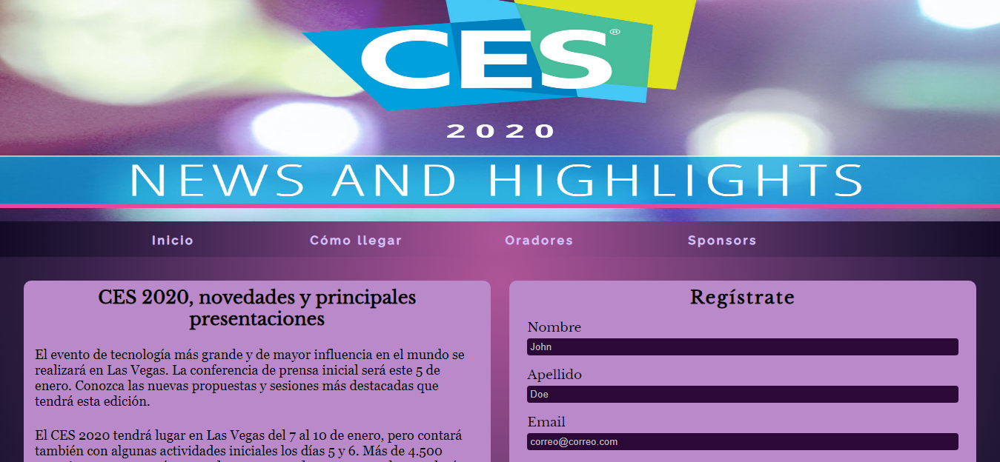
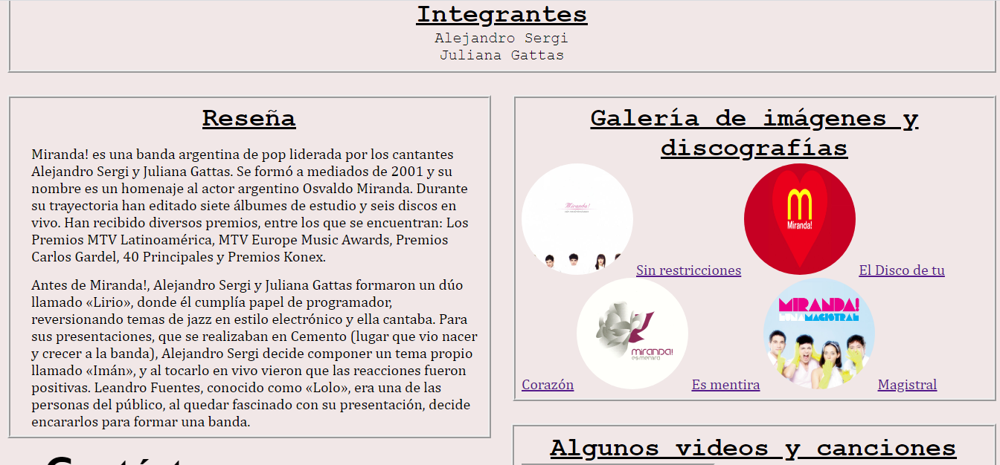

Sofia Justiniano
Soy Sofía, tengo 20 años vivo en Wilde, Partido de Avellaneda, en Argentina. Actualmente me encuentro cursando la carrera de Desarrollo Web Full Stack en Acámica y también la carrera de Licenciatura en Informática en la Universidad Nacional de Quilmes.
Tecnologías y lenguajes adquiridos
- HTML
- CSS
- SmallTalk
Mis Proyectos

